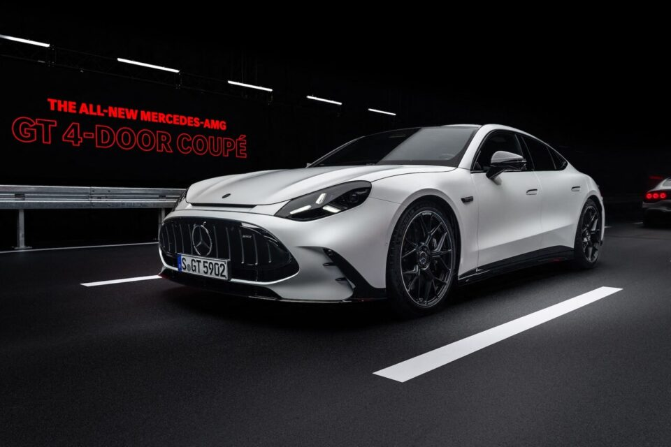

Mercedes-AMG est la filiale haute performance emblématique de Mercedes-Benz. Fondée en 1967 par Hans-Werner Aufrecht et Erhard Melcher à Burgstall (puis installée à Affalterbach), l'entreprise est passée d'un statut de préparateur indépendant à celui de division sportive officielle, mondialement reconnue pour ses innovations techniques et ses moteurs d'exception

Aujourd'hui, AMG ne se contente plus de muscler les modèles de série de la gamme Mercedes-Benz. L'entité crée ses propres châssis, réinvente l'acoustique sportive pour l'ère électrique et s'impose comme le laboratoire technologique de pointe du groupe automobile allemand.